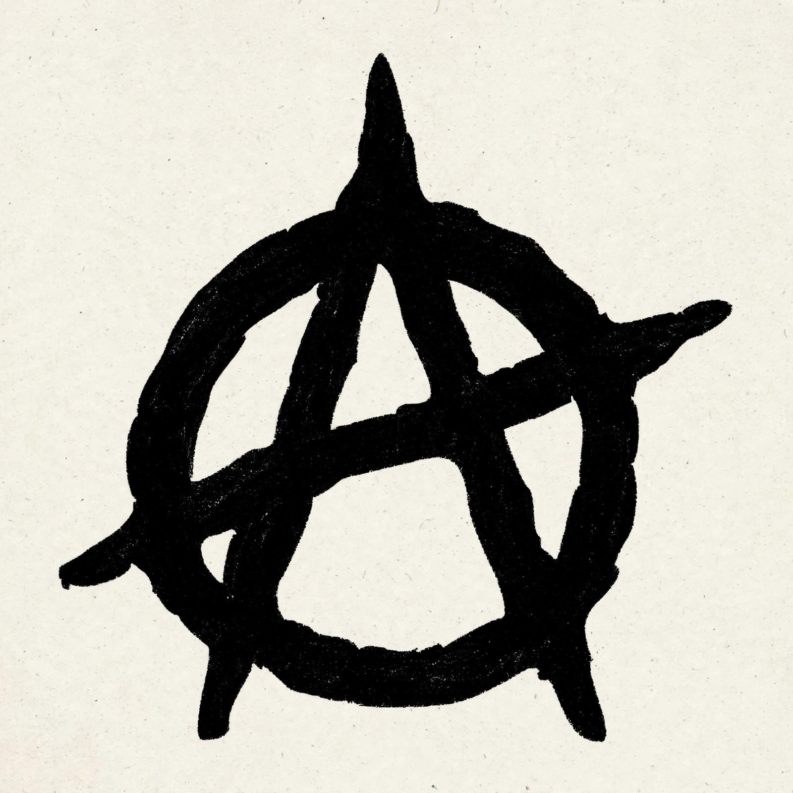

Anarchy is a form of society without rulers. It is primarily advocated by anarchists who propose replacing the state with a stateless society based on voluntary free association. The word derives from the ancient Greek anarkhia, meaning 'without a ruler'.

'Anarchy' entered English from French in the 16th century, initially carrying the negative sense of disorder or chaos through lack of government. Anarchist writers reclaimed the term for an order based on voluntary cooperation rather than imposed authority.
Ideas resembling anarchy appear in ancient Greek and Chinese philosophy, among some religious movements, and in stateless societies studied by anthropologists. Modern anarchism emerged in the 19th century with thinkers such as Pierre-Joseph Proudhon, Mikhail Bakunin, and Peter Kropotkin, and influenced labour movements, the Spanish Civil War, and later protest movements.
In international relations theory, anarchy describes the absence of a world government above states, a condition that realists argue drives states toward self-help and power politics.